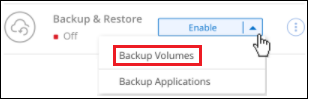
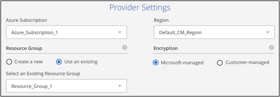
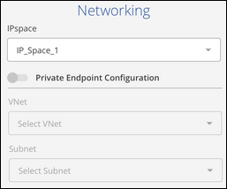
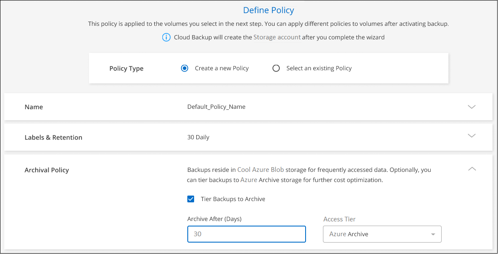
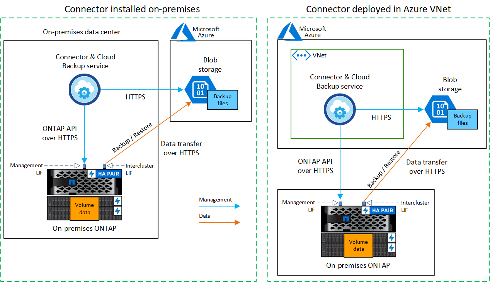
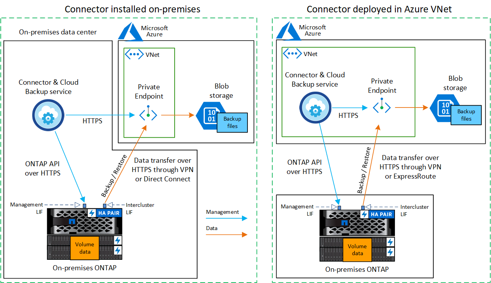

Amazon Web Services
Amazon Web Services
 Google Cloud
Google Cloud
 Microsoft Azure
Microsoft Azure
 要求變更文件
要求變更文件 編輯此頁面
編輯此頁面 瞭解如何作出貢獻
瞭解如何作出貢獻將內部部署ONTAP 的內部資料備份到Azure Blob儲存設備
請完成幾個步驟、開始將內部部署ONTAP 的資訊系統中的資料備份到Azure Blob儲存設備。
請注意、「內部部署ONTAP 的功能不只是指FAS 包含了功能不全的功能、AFF 包括了功能不全的功能、包括了功能不全的功能。ONTAP Select
快速入門
請依照下列步驟快速入門、或向下捲動至其餘部分以取得完整詳細資料。
{kind=link}
-
您已探索內部部署叢集、並將其新增至 Cloud Manager 中的工作環境。請參閱 "探索 ONTAP 叢集" 以取得詳細資料。
-
叢集執行 ONTAP 的是更新版本的 1.7P5 。
-
叢集具有SnapMirror授權、包含在優質產品組合或資料保護產品組合中。
-
叢集必須具備連接Blob儲存設備和連接器所需的網路連線。
-
-
連接器必須具備所需的網路連線至Blob儲存設備和叢集、以及所需的權限。
-
您擁有有效的Azure訂閱、可用於儲存備份所在的物件儲存空間。
選取工作環境、然後按一下右窗格中「Backup & Restore（備份與還原）」服務旁的*「Enable（啟用）」>「Backup Volumes（備份磁碟區）」*、然後依照設定精靈進行。

選取Microsoft Azure做為您的供應商、然後輸入供應商詳細資料。您必須選擇Azure訂閱、以及您要建立備份的地區。您也可以選擇自己的客戶管理資料加密金鑰、而非使用預設的Microsoft管理加密金鑰。

選取ONTAP 位於磁碟區所在之資訊區叢集中的IPspace。您也可以選擇使用現有的Azure私有端點、從內部資料中心建立更安全的Vnet連線。

預設原則會每天備份磁碟區、並保留每個磁碟區最近 30 個備份複本。變更為每小時、每日、每週、每月或每年備份、 或選取其中一個系統定義的原則、以提供更多選項。您也可以變更要保留的備份複本數量。
根據預設、備份會儲存在冷存取層中。如果您的叢集使用ONTAP 的是更新版本的版本、您可以選擇在特定天數後將備份分層至Azure歸檔儲存設備、以進一步最佳化成本。

在「Select Volumes（選取磁碟區）」頁面中、使用預設的備份原則來識別要備份的磁碟區。如果您想要將不同的備份原則指派給特定磁碟區、可以建立其他原則、並於稍後套用至磁碟區。
需求
請先閱讀下列需求、確定您擁有支援的組態、再開始將內部部署磁碟區備份到Azure Blob儲存設備。
從內部部署ONTAP 的還原系統設定備份到Azure Blob時、您可以使用兩種連線方法。
-
公共連線：使用ONTAP 公有Azure端點、直接將整個系統連接至Azure Blob儲存設備。
-
私有連線：使用VPN或ExpressRoute、並透過使用私有IP位址的vnet私有端點路由流量。
下圖顯示*公用連線*方法、以及元件之間需要準備的連線。您可以使用已安裝在內部部署中的Connector、或是已部署在Azure vnet中的Connector。

下圖顯示*私有連線*方法、以及元件之間需要準備的連線。您可以使用已安裝在內部部署中的Connector、或是已部署在Azure vnet中的Connector。

準備 ONTAP 您的叢集
您必須先在ONTAP Cloud Manager中探索內部部署的叢集、才能開始備份大量資料。
- 需求 ONTAP
- 叢集網路連線需求
-
-
透過連接埠443從叢集間LIF啟動HTTPS連線至Azure Blob儲存設備、以便進行備份與還原作業。ONTAP
可在物件儲存設備中讀取及寫入資料。 ONTAP物件儲存設備從未啟動、只是回應而已。
-
需要連接器與叢集管理LIF之間的傳入連線。ONTAP連接器可位於Azure vnet中。
-
裝載您要備份之磁碟區的 ONTAP 每個節點都需要叢集間 LIF 。LIF 必須與 IPspac_ 建立關聯、 ONTAP 以便連接物件儲存設備。 "深入瞭解 IPspaces"。
設定Cloud Backup時、系統會提示您輸入要使用的IPspace。您應該選擇每個 LIF 所關聯的 IPspace 。這可能是您建立的「預設」 IPspace 或自訂 IPspace 。
-
節點和叢集間的生命體均可存取物件存放區。
-
DNS伺服器已針對磁碟區所在的儲存VM進行設定。瞭解如何操作 "設定SVM的DNS服務"。
-
請注意、如果您使用的IPspace與預設值不同、則可能需要建立靜態路由才能存取物件儲存設備。
-
如有必要、請更新防火牆規則、以允許Cloud Backup Service 透過ONTAP 連接埠443將物件儲存區的支援鏈路從物件儲存區連線、並透過連接埠53（TCP/IP）、將儲存VM的名稱解析流量從DNS伺服器連線至DNS伺服器。
-
建立或切換連接器
如果您已在Azure vnet或內部部署了Connector、您就能輕鬆完成設定。如果沒有、您需要在其中任一位置建立連接器、以便將ONTAP 還原資料備份到Azure Blob儲存設備。您無法使用部署於其他雲端供應商的Connector。
為連接器準備網路
確認連接器具備所需的網路連線。
-
確保安裝 Connector 的網路啟用下列連線：
-
連接Cloud Backup Service 至連接埠443（HTTPS）的傳出網際網路連線
-
透過連接埠443連線至Blob物件儲存設備的HTTPS連線
-
透過連接埠443連線至ONTAP 您的SURF叢 集管理LIF的HTTPS連線
-
-
啟用vnet私有端點對Azure儲存設備。如果ONTAP 從您的DB2叢集到vnet有ExpressRoute或VPN連線、而且您想要連接器與Blob儲存設備之間的通訊保持在虛擬私有網路（*私有*連線）中、就需要此功能。
支援的地區
您可以在所有地區、從內部部署系統建立備份到Azure Blob "支援的地方 Cloud Volumes ONTAP"（包括Azure政府區域）。您可以指定在設定服務時儲存備份的區域。
驗證授權需求
-
若要為叢集啟動Cloud Backup、您必須先訂閱Azure提供的隨用隨付（PAYGO）Cloud Manager Marketplace產品、或向NetApp購買及啟動Cloud Backup BYOL授權。這些授權適用於您的帳戶、可在多個系統上使用。
-
若要取得Cloud Backup PAYGO授權、您需要訂閱 "Azure" Cloud Manager Marketplace提供的雲端備份功能。雲端備份計費是透過此訂閱完成。
-
對於Cloud Backup BYOL授權、您需要NetApp的序號、以便在授權期間和容量內使用服務。 "瞭解如何管理BYOL授權"。
-
-
您必須訂閱Azure、才能取得備份所在的物件儲存空間。
您可以在所有地區、從內部部署系統建立備份到Azure Blob "支援的地方 Cloud Volumes ONTAP"（包括Azure政府區域）。您可以指定在設定服務時儲存備份的區域。
準備Azure Blob儲存設備進行備份
-
您可以在啟動精靈中使用自己的自訂管理金鑰進行資料加密、而非使用預設的Microsoft管理加密金鑰。在此情況下、您必須擁有Azure訂閱、Key Vault名稱及金鑰。 "瞭解如何使用您自己的金鑰"。
-
如果您想要透過公用網際網路從內部資料中心連線至vnet、可以在啟動精靈中設定Azure私有端點。在這種情況下、您需要知道此連線的vnet和子網路。 "如需使用私有端點的詳細資訊、請參閱"。
啟用雲端備份
可隨時直接從內部部署工作環境啟用雲端備份。
-
從「畫版」中選取工作環境、然後按一下右窗格中「備份與還原」服務旁的*「啟用」>「備份磁碟區」*。
-
選取Microsoft Azure做為您的供應商、然後按一下* Next*。
-
輸入供應商詳細資料、然後按*下一步*。
-
用於備份的 Azure 訂閱、以及儲存備份的 Azure 區域。
-
管理Blob容器的資源群組-您可以建立新的資源群組或選取現有的資源群組。
-
無論您是使用預設的Microsoft管理加密金鑰、還是選擇自己的客戶管理金鑰來管理資料加密。 ("瞭解如何使用您自己的金鑰"）。
-
-
如果您的帳戶沒有現有的Cloud Backup授權、此時系統會提示您選擇要使用的收費方法類型。您可以訂閱Azure提供的隨用隨付（PAYGO）Cloud Manager Marketplace服務（或如果您有多個訂閱、則需要選擇一個）、或向NetApp購買並啟動Cloud Backup BYOL授權。 "瞭解如何設定Cloud Backup授權。"
-
輸入網路詳細資料、然後按*下一步*。
-
您要備份的磁碟區所在的叢集中的 IPspace ONTAP 。此IPspace的叢集間生命體必須具有傳出網際網路存取。
-
您也可以選擇是否要設定Azure私有端點。 "如需使用私有端點的詳細資訊、請參閱"。
-
-
輸入將用於預設原則的備份原則詳細資料、然後按一下「下一步」。您可以選取現有的原則、也可以在每個區段中輸入您的選擇來建立新原則：
-
輸入預設原則的名稱。您不需要變更名稱。
-
定義備份排程、並選擇要保留的備份數量。 "請參閱您可以選擇的現有原則清單"。
-
若使用ONTAP 的是更新版本的版本、您可以選擇在特定天數後將備份分層至Azure歸檔儲存設備、以進一步最佳化成本。 "深入瞭解如何使用歸檔層"。
-
-
在「Select Volumes（選取磁碟區）」頁面中、使用預設備份原則選取您要備份的磁碟區。如果您想要將不同的備份原則指派給特定磁碟區、可以建立其他原則、並於稍後將其套用至這些磁碟區。
-
若要備份所有磁碟區、請勾選標題列中的方塊（
 ）。
）。 -
若要備份個別磁碟區、請勾選每個磁碟區的方塊（
 ）。
）。
如果您希望未來新增的所有磁碟區都啟用備份、只要勾選「自動備份未來磁碟區…」核取方塊即可。如果停用此設定、您將需要手動啟用未來磁碟區的備份。
-
-
按一下「啟動備份」、「雲端備份」就會開始進行磁碟區的初始備份。
Cloud Backup會開始對每個選取的磁碟區進行初始備份、並顯示Volume Backup Dashboard、以便您監控備份狀態。
您可以 "開始和停止磁碟區備份、或變更備份排程"。您也可以 "從備份檔案還原整個磁碟區或個別檔案" 至Cloud Volumes ONTAP Azure的某個系統、或內部部署ONTAP 的系統。